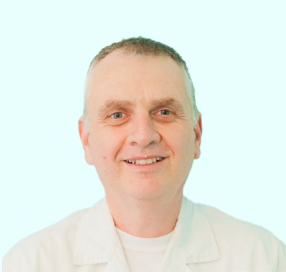
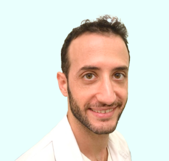

לקביעת ייעוץ עם מומחה כאב השאירו פרטים ונחזור אליכם
ברוכים הבאים למרפאת ביאליק
סובלים מכאבי גב? מעוניינים להקל על כאבים ללא תרופות? טיפולי אוסטאופתיה מספקים מענה למטופלים שהרפואה השמרנית לא מצאה פתרון לבעיותיהם ולמי שרוצים לחזק את גופם באמצעות טיפול אלטרנטיבי נגד כאבים.
טיפול הוליסטי בכאב
-
80%
מטפלים
-
+1k
רופאים
-
290
פסיכולוגים
-
+500
התמחויות
-
124
לקוחות מרוצים
המומחים שלנו
-
דני שמואל -
אוסתאופת
אוסטאופת מוסמך ומדריך בחברה לרפואת שריר שלד. בעקבות הנסיון הרב שצבר בעבודה עם רופאים ומטופלים, דני מוכר בתחום כמומחה של הקלה בכאבי ראש, כתפיים, גב וברכיים. הוא ידוע בכישוריו למצוא את מקור הבעיה, לטפל בשורש הכאב וללוות את המטופל עד לחזרה לאורח חיים תקין. את חייו הוא מקדיש לתחום הטיפול כבר 25 שנה ומלבד הטיפול האוסטאופתי הוא מומחה ברפואת חירום ומתנדב ברשת איחוד הצלה
-
ליאור אשכנזי -
אוסתאופת
אוסטאופת מוסמך בעל נסיון רב בעבודה עם תינוקות ונשים הרות המביא עימו רוח צעירה וחדשה לטיפול האוסטאופתי. ליאור מומחה לטיפול בכאבים מבניים הנובעים ממערכת השלד או כתוצאה מפציעות ספורט, מומחה למצבי חירום רפואיים, מרכז קורסים של נאמני כאב כחלק מתכנית לימודי ההמשך לרופאי משפחה של אוניברסיטת תל אביב ומדריך בחברה לרפואת שריר שלד
פרטי התקשרות
טשרניחובסקי 26, קומה מינוס 1
תל אביב
שעות פתיחה א- ה 8-20
צור קשר
מתעניין אודות הטיפול ? קרא עוד לגבי טיפולים אוסטאופתים !